Transportation Guide
Created by Phadin Karkee
While you enter in Japan to know about the transportation is very much crucial. In this section I will discuss about the different types of transportation facilities and procedure of getting bus/train card and so on for student who visit japan firstly for study purpose in Kyoto.
In Kyoto, Taxi and City bus are easily available means of transportation. Because of limited money brought from home is not sufficient to travel here and there by taxi, it is so costly which impossible to afford by a student. So, my main focus on this topics will be city bus which is easily available and affordable to international students.
ICOCA Card
This is famous in city bus all over the Kyoto city which is easy to get from the respective Bus counter. The card provide many facilities to the student. I.e. Student can use this card multiple times in a day meaning (unlimited use) then the other lay man. Once you make the card it not need to pay the money during the card expiry date. The duration of card depend upon the self-necessity whenever you want to purchased. You can take this card from one month up to the date your student card have. But there is also available the bus card for one day/tow days and … to purchased it you need to pay the amount according to the rule.
An international student need to show the following things to get ICOCA CARD:
Firstly, you need to college card to show the Card counter for student unlimited discount which is provided by your respective college. This card include your enrollment year and date of expiry, some college provide card for a semester some for two or some for whole college stay(graduation time) which depend up to your college rule. This card is very important to renew your transportation card so keep it safely.
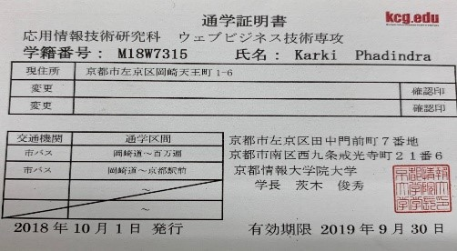Secondly, you need to fill-up the following form according to the figure as below in each renewal time.
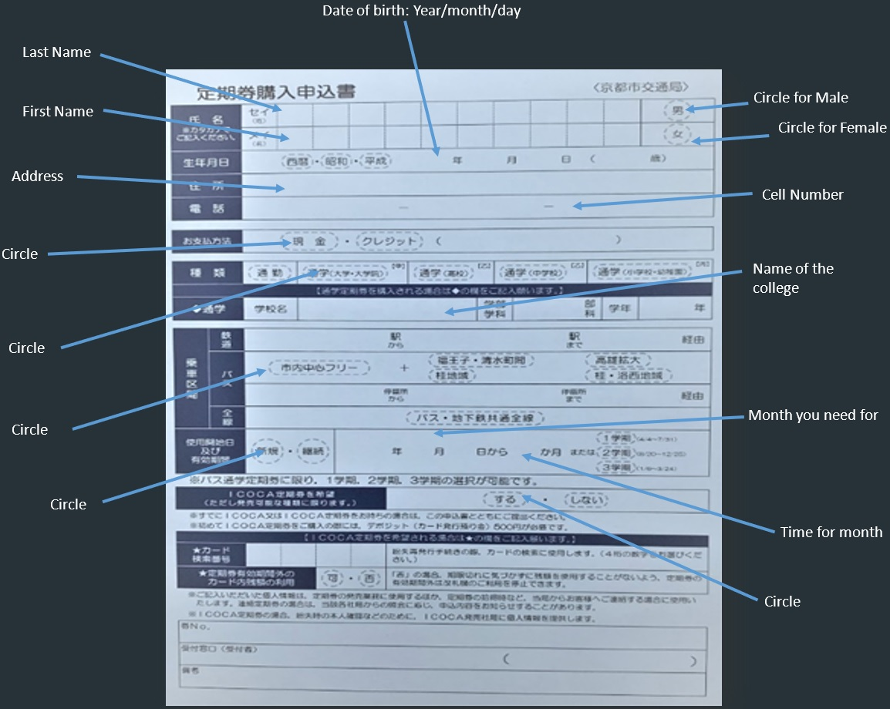Thirdly, you should submit Student card with valid date and total amount of card. The Monthly charge of the card is 7,920 Yen per month but if you purchased for more than one month at once you can get discount amount than a month of charge.
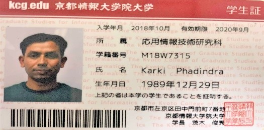Finally, you get this card:
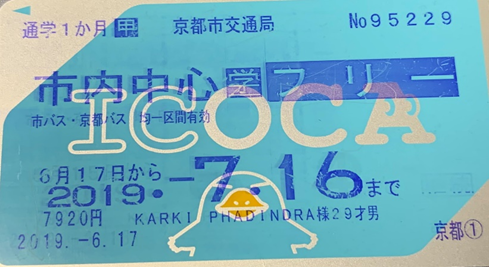The color of card may vary is according to the rule and promption strategy of the city transportation management. Before you receive the card you should properly check the detail of yourself include in your card like, expairy date , name and so on. You should keep the card safely because ones you loose your card you need to pay one thausand yen not only this your card may be misuse by others too
Some Sample bus passes
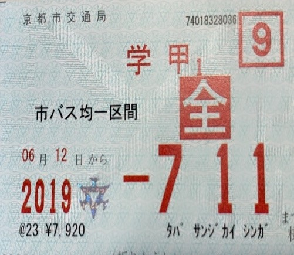 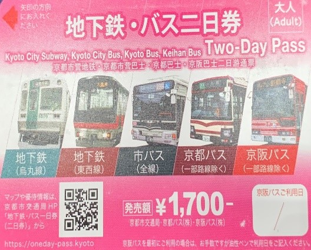 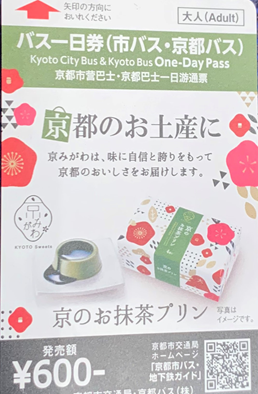Inside physical features of the bus
The overall feature of the city bus is same. Every bus is incluseve and disable firendly. There is reservation seats in each bus like; people of ageing, pregnancy women, people with physical disability and women with small childrens. Inside the bus there a coin locker near to the driver side. If, you don’t have any types of transportation card you should put to the exact amount in this coin box. If you put the exact amount to the box it is easy to all the passenger to getoff from the bus. If you don’t have exact amount you can change the amount upto 1000 yen in this machine before getoff, but the machince doesnot accept the amount of 10,000 yen. The fare for bus in a time is 230 yen for adult and 120 yen for children and other special discount people like people have physical disabilities and ageign simply show their card to the driver is ok.
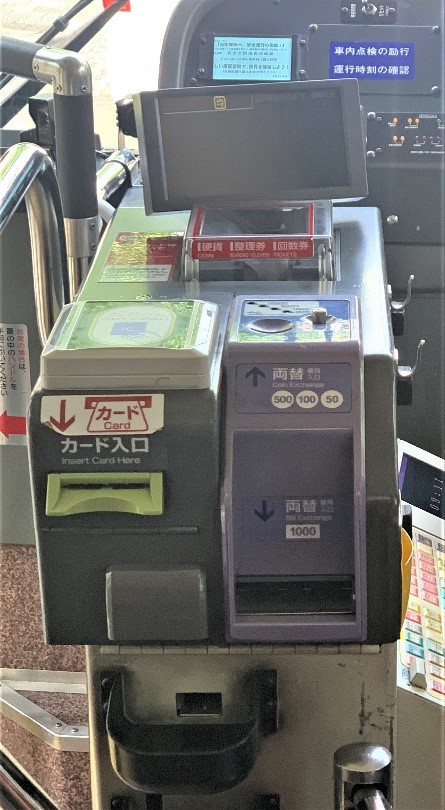Inside the bus there there are several bell(stop request) near the every seat, if your want to getoff in the next coming station you should push the stop request button, before push the button the button is deam but after push the button is hightlight and bell is ringing. If the bell is push by another pople befor you , it not need to push again.
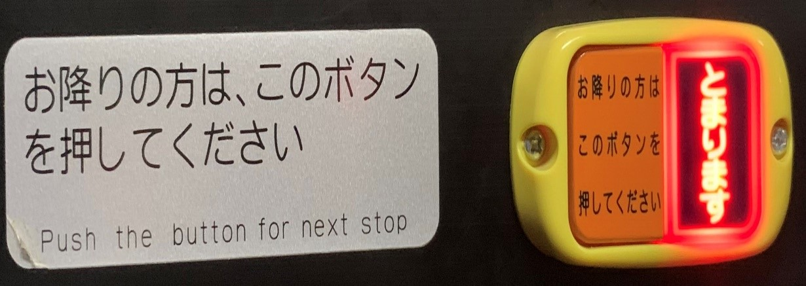Prepay or Postpay
Next things in bus need to know is previously pay or after pay. Most of the city bus have same method of paying meaning you shouod touch the card or pay the fare while you get out from the bus and need to enter from the back door but some bus have opposite method to pay , you should touch your card or pay the amount during get-in the bus but at last while you get-out from the bus you can use the both door to out from the bus. The picture is an exemple of previously paid: if you see this picture in bus somewhere you should enter from the front door.
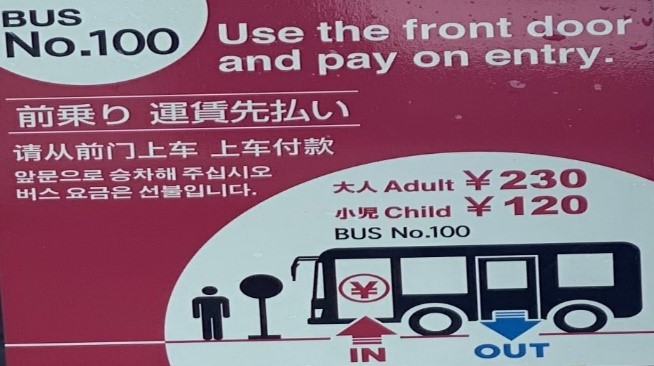Bus display information(on the way) and final stop/waiting
The available time of city bus in Kyoto City is normally 5 AM up to 11 PM later we cannot find public bus all over the city , need to hire private vehicle at mid night which is so costly for a single person. So be careful about the available bus time is necessery to every person prevention from more transportation expenses.
Firstly, Each bus routes on the street there is a bus stop you should wait the respective bus in stop if there is queu in stop youshould stay last the person not stay at the front if you do this people are angry with you so you should follow the rule in each place. In each bus stop there is information box you should look carefully the route, bus time and bus number.
Tipically every bus stop in Kyoto have this types of information box. The box display recently coming bus. In each stop there is the display of bus number and status of arrival. Look at the box there are three circle in just down the bus number. The three curcle indicate the bus is how many station behind you for exemple if the highlited yellow is at the third circle this means the bus is 2 station far from you if, the highlited yellow color is in second circle the bus is 1 station far from you and if the yellow highlited yellow color is in the first circle this indicate the bus is approaching at your station so you should ready.
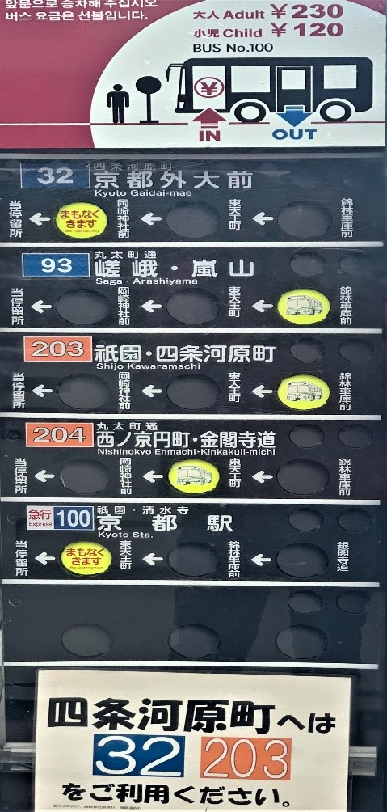Sometime in some bus stop not showing station but showing minutes for approaching is same as the above mention this means the last highlited yellow button indicate 5 minutes left to approaching respectively 3 and approach for second circle and first circle.
The next information we need to know is bus number and bus time. At the side of display box there is an image of bus schedule of whole day/week. Commonly all the time in week days is same but little bit different in Sunday and holidays. The bus commonly approach on time but some time due to the traffic and unexpected circumstances bus may delayed.
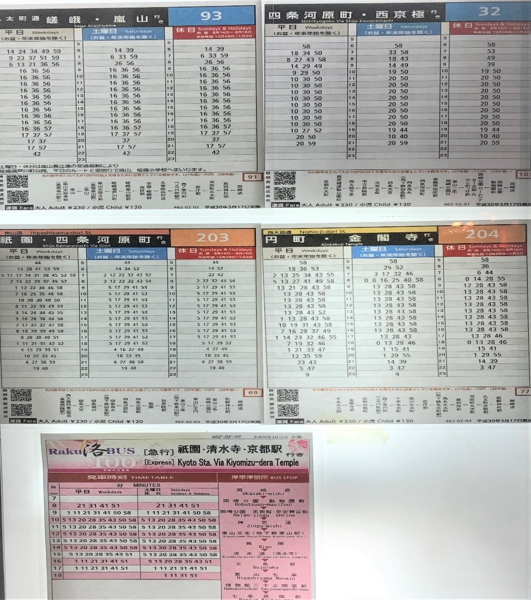Next thing in this display box have informatio about the bus routes with figure we should carefully look the figur before to decide the own bus route and bus number and make sure the bus travel according to the station display in figure. Instead of thes you can use google map to know about the location, bus number and time which is exact as this figue.
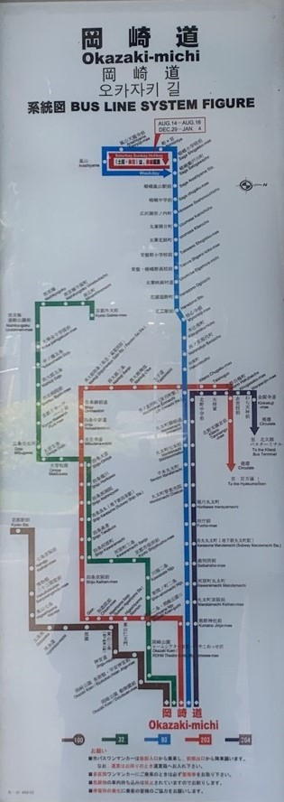In the bus final station there is display button with code number , so make sure the bus number of your own and stay at line. The buses are approaching according to display box time and in respective code number. Like the figure below showing code D2 and location of different place, it also display which number of bus is approaching so don’t confuse about this.
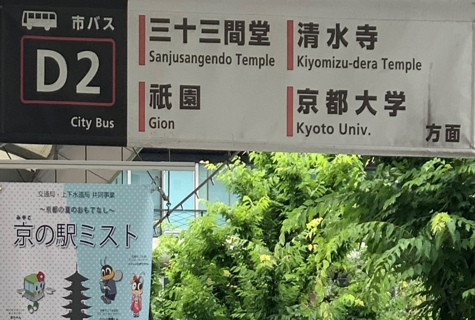Information of Train
Train in japan is very important means of transportation. Mostly in long rute or a city from antoher city it is used. Which helps the people to work far away form home. It is easily accessible means of transportation in kyoto city. Kyoto station(Kyoto Ekemai), Sijo Kawaramachi are the main station in kyoto city beside form this there are many sub stations which are mostly undergroud you can use any near station from you. Before travel to tain please check the destination at first for this you can use google map. If you need to go to out of kyoto city, you should use the train but it is not compulsan you can use bus too but compairaing to bus it is fast, cheap, luxerious and best.
To purchase the ticket of train we should go to station in each station there is automatic ticket machine we should use these machince. In most of the machice in kyoto city have english guide so new students who have not sufficent khowledge in japanese lanugaue can choose english guide to purchase. Ther is no any difficulties to purchase ticket, Its easy. Firstly you should choose the english guide and follow the instruction. Secondly put the money and choose how many ticket do you want and what it the amount of ticket. In the left side there is a sign of how many ticket do you want to purchase , you should choose by pressing the key. If you press the key the key will hightlight and there is a option of confirm in display box so you should touch the key to get ticket. Sometime it may be mistake unknowingly like you want to ticket of 2 persons but bymistakely you press the key of 3 not only this in choose of amount it may happen if you face this you cancelled the by pressing the cancle key in display. Remer the screen is screen touch. After getting ticket you should put the ticket on the machine to access and enter from the respective place if you put your ticket in machice in another side of maching you can get the same ticket with small whole so you should keep it safely during the travel time because if you lost the thcket you have problem in exit. You may need to purchase again to exit if you loss. In exit there is a same types of machine you should put the ticket in machine and can exit form but the ticket is not returned.
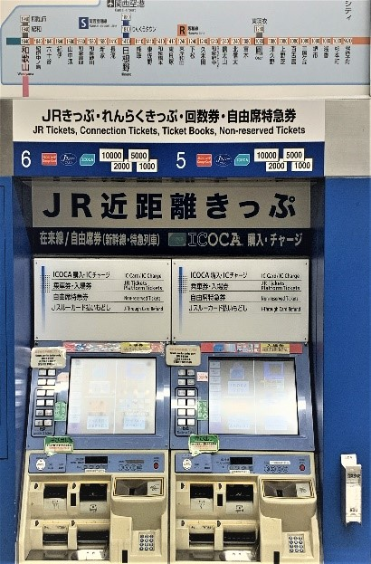 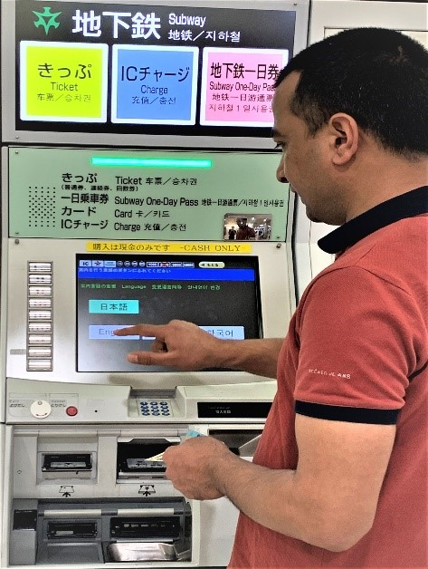Instead of ticket purchase by cash you can deposite the money in ICOCA card of bus which is the best way of time saving. If your ICOCA card have sufficient amount you can simply touch the senser of entry gate.
If you want to purchas the day pass in the corner there is a railway pass center you can contact to this center for pass the center is as follow
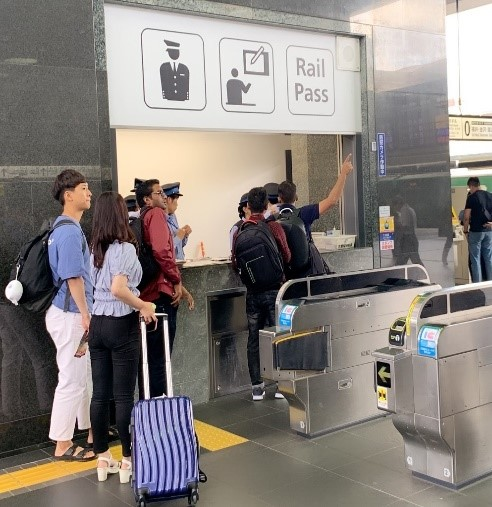If you further want to detail about railway there is tourist information in every rail station.You can contact for further inforamtion the center is like the following picture written in English.
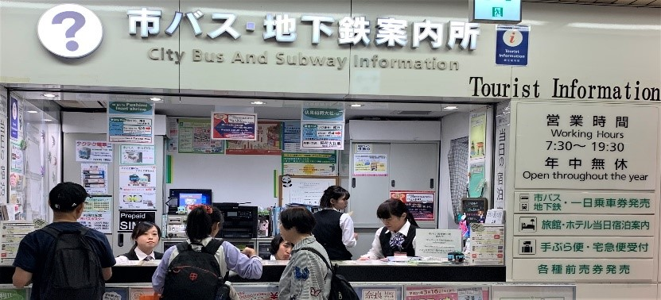To know detail about the train system in Japan please visit the link below:
https://www.seat61.com/Japan.htm